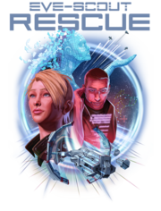

ESR:EvE-Scout Rescue Cache (ESRC) - Quick Reference Guide
| EvE-Scout Rescue |
|---|
|  |
{kind=link}
Useful Links[edit]
- Allison - mandatory for all ESRC pilots
- Full ESRC Guide - READ ME.
- How to locate our Rescue Caches (two methods):
- ESRC Shared Bookmarks - When possible use the bookmarks! It's much easier.
- "Bounce Method" Instructions
- ESRC Activity Video with Bookmarks by Arturon Megumi
Sowing[edit]
- Supplies: Each new cache MUST include -
Item Quantity Small Secure Container 1 Core Probe Launcher I 1 Core Scanner Probe I 8 Hugs (fireworks, snowballs, etc.) optional - Skills: Make sure "Anchoring I" is trained!
- Find a wormhole.
- Be notified of no cache in system by Allison.
- Find a good location:
- Most of the time, you can use the existing cache bookmark to sow at the previous location. Please use the EvE-Scout Rescue Cache Shared Bookmarks.
- However, if it seems like the cache was not naturally expired (ie. was destroyed) or a bookmark doesn't exist, please select another location planet and sow the new cache between 22,000 and 50,000 km from a celestial object, off-grid. Don't use the star unless system has only one planet. Avoid using gas planets as a location planet.
- The “ Bounce Method” is helpful to find just the right spot:
- Right click on container in cargo bay and select Launch for Self.
- Place cache contents in container.
- ANCHOR CACHE. Right click on the container and select Anchor. (Anchoring takes 60 seconds. The following steps can be completed while anchoring finalizes.)
- Orbit container at 4000 m and cloak.
- Set Name of container to: EvE-Scout Rescue Cache - Stranded in this wormhole? Request help in the EvE-Scout channel.
- Set New Password on container. Copy the pre-generated password from the ESRC web page by clicking on the clipboard icon.
- Record cache information (on Sower data entry form in Allison). Verify info is correct.
- Confirm container is anchored. This step is mandatory.
- If there is not an existing bookmark add a bookmark to the
ESRC New Bookmarksfolder.
{kind=link}
Tending[edit]
- Supplies: Each existing cache MUST include -
Item Quantity Core Probe Launcher I 1 Core Scanner Probe I 8 Hugs (fireworks, snowballs, etc.) optional - Be notified of an existing cache in system that needs tended by Allison.
- Locate cache using an existing bookmark ( EvE-Scout Rescue Cache Shared Bookmarks) or via “ Bounce Method” (see illustration above).
- Open cache. Inventory contents and resupply if needed.
- Check the cache ownership. If it's not [SC0UT][1420.] then the cache will need to be relocated
- Check the cache name. It should be "EvE-Scout Rescue Cache - Stranded in this wormhole? Request help in the EvE-Scout channel". If not, please relocate.
- Verify that the cache has a password. Passwordless caches need to be relocated
- Make sure there is only one cache on grid and the cache is not on grid with any other object
- Record cache information (on Tender data entry form in Allison). Verify info is correct.
{kind=link}
Relocation[edit]
Existing caches cannot be moved. If a cache needs to be either resown or relocated, for any reason, the existing cache should be emptied and noted in the Allison database as expired via the Tender data entry form, and a new cache should be anchored and supplied at a proper location. This new cache should then be entered into the database via the Sower data entry form. Lastly, a bookmark of the new cache location should be placed into the ESRC New Bookmarks folder.
Hugs policy[edit]
Different hug items in caches (snowballs, fireworks...) are small fun items for our lost pilots to enjoy. Those are not "geocaching" items for us. Having those in caches is purely optional, only a launcher and a set of probes are mandatory.
- Only 1-2 stacks of hugs per cache is recommended. Our lost pilots are often in a stressful situation, we don't want to clutter their view with unnecessary huge amount of items.
- No corpses or ESS bounties.
- Other living things at your own discretion.
- Avoid taking things out from caches unless it is something mentioned in #2
Troubleshooter FAQ[edit]
Three general principles to keep in mind in any situation:
- Help is available in the
#esr-loungechannel in the corporate Discord server. If necessary, you can ping @ESR-Coordinator for a quicker response. - If in doubt, expiring the existing cache and resowing a new cache in a new location is often the safest solution.
- Check the check-list!
| Situation | Check | Action |
|---|---|---|
| Allison tells me that I am in a SAR system | N/A | Get to a safe in-system, cloak up and wait for a coordinator to contact you in game. If you cannot cloak up, get to a safe, safe-log and contact @ESR-Coordinator on Discord. Further advice here. |
| Allison says there is no cache, but there is one at the old bookmark | Is the cache sower still with Signal Cartel (corp ticker set to "[1420.]")? | If yes, then verify that the password is unchanged and use the "Resow" function and the "Same as last cache" button to reenter the cache details. Separately copy in the old password from the previous sow operation.
If not "[1420.]", resow a new cache at a new location. |
| Allison says that there is cache to be tended, but there is no cache on-grid | Check the cache history notes. Have multiple caches have been destroyed at this location? | If yes, contact the ESR Coordinators for advice.
If not, expire the cache on Allison and resow at a new location. |
| Allison says there is a cache to be tended, but the bookmark is missing and the cache is on D-scan | Is the bookmark in the new bookmark folder? | If yes, tend as per usual.
If not, try to find the cache using the bounce method and create a new bookmark. |
| Password from Allison doesn't work | Does the previous password (as given in the previous sow entry in the "History" section) work? | If you still don't have access, expire the cache on Allison and resow in a new location. |
| Bookmark is more than 5km from the cache | N/A | Create a new bookmark at the cache's location. Leave a tending note requesting deletion of the old bookmark. |
| Received a message in local chat advising that a new rescue cache is not wanted | N/A | Advise the other capsuleer to reach out to the ESR Division Manager using Evemail. |
| Another ship was on grid or there were a set of close-by combat probes on D-scan | N/A | Expire the existing cache and add a note to explain. If your ship is in danger, you are under no obligation to attempt to resow a new cache. |
| I marked a cache as unusable, when in fact it is fine. | N/A | Resow in Allison and use the "Same as last cache" button to repopulate the previous information set. Separately copy in the old password from the previous sow operation. |
| Two caches can be seen on D-scan | N/A | Carry out the usual tending checks on the cache at the bookmark. No actions other actions needed. |
| Cache has no password set - contents can be accessed without one (*) | N/A | Expire the cache and resow at a new location. |
| While tending, received the following error message: "The requested task requires the general password to be entered." | N/A | Known bug. Log-out and log back in again - the error should resolve itself. |
| There are two bookmarks for the cache in the shared folder | N/A | Add a tending note, advising the ESR Coordinators that one needs to be deleted. |
ESRC In-Game Notepad Checklists[edit]
Notes to copy and paste into in-game notepad.
Tip: Click the handy-dandy copy button on the upper right of the code block to copy all the text!
These notes are not automatically updated in-game. Please make sure you're always using the latest version
ESRC Tending Checklist[edit]
v1.0.2
<font size="14" color="#bfffffff"></font><font size="18" color="#fff00000"><b>NOTE: This checklist does not replace reading the </font><font size="18" color="#ffffe400"><a href="https://wiki.signalcartel.space/ESR:EvE-Scout_Rescue_Cache_(ESRC)_-_Quick_Reference_Guide">wiki</a></b><br><br></font><font size="18" color="#ff007fff">ESRC Tending Checklist </font><font size="18" color="#bfffffff">(v1.0.2)<br><br></font><font size="13" color="#bfffffff">1. </font><font size="13" color="#ff007fff"><b>Supplies</b></font><font size="13" color="#bfffffff">:<br> - </font><font size="13" color="#ffd98d00"><a href="showinfo:3467">Small Secure Container</a><br></font><font size="13" color="#bfffffff"> - </font><font size="13" color="#ffd98d00"><a href="showinfo:17938">Core Probe Launcher I</a></font><font size="13" color="#bfffffff"> x 1<br> - </font><font size="13" color="#ffd98d00"><a href="showinfo:30013">Core Scanner Probe I</a></font><font size="13" color="#bfffffff"> x 8<br> - Hugs (fireworks, snowballs, etc.) [optional]<br><br>2. </font><font size="13" color="#ff007fff"><b>Be notified of an existing cache</b></font><font size="14" color="#ff007fff"> </font><font size="13" color="#ff007fff">in system that </font><font size="13" color="#bfffffff">needs tending</font><font size="13" color="#ff007fff"> by Allison.<br><br></font><font size="13" color="#bfffffff">3. </font><font size="13" color="#ff007fff"><b>Locate Cache</b></font><font size="14" color="#ff007fff"> </font><font size="13" color="#ff007fff">using an existing bookmark or via the</font><font size="13" color="#bfffffff"> </font><font size="13" color="#ffffe400"><loc><a href="http://wiki.signalcartel.space/Public:Bounce_Method_Instructions_(en)">Bounce Method</a></loc></font><font size="13" color="#bfffffff">.<br><br>4. </font><font size="13" color="#ff007fff"><b>Check the cache ownership:</b><br></font><font size="13" color="#bfffffff"> - If it's not </font><font size="13" color="#ff007fff"><b>[SC0UT][1420.]</b></font><font size="14" color="#bfffffff"> </font><font size="13" color="#bfffffff">then the cache will need to be </font><font size="13" color="#ff00ffff"><b>relocated</b></font><font size="13" color="#bfffffff">.<br><br>5. </font><font size="13" color="#ff007fff"><b>Check the cache name</b></font><font size="14" color="#bfffffff">:<br></font><font size="13" color="#bfffffff"> - It should be "</font><font size="13" color="#ff007fff"><b>EvE-Scout Rescue Cache - Stranded in this wormhole? Request help in the EvE-Scout channel</b></font><font size="13" color="#bfffffff">" If not, please </font><font size="13" color="#ff00ffff"><b>relocate</b></font><font size="13" color="#bfffffff">.<br><br>6. </font><font size="13" color="#ff007fff"><b>Verify that the cache has a password</b></font><font size="13" color="#bfffffff">.<br> - Passwordless caches need to be </font><font size="13" color="#ff007fff"><b>relocated</b></font><font size="13" color="#bfffffff">.<br><br>7. </font><font size="13" color="#ff007fff"><b>Make sure there is </b></font><font size="13" color="#bfffffff">only one cache</font><font size="13" color="#ff007fff"> on grid and the cache is not on grid with any other object</font><font size="13" color="#bfffffff">.<br><br>8. </font><font size="13" color="#ff007fff"><b>Open cache</b></font><font size="13" color="#bfffffff">.<br> - Inventory contents and resupply if needed.<br><br>9. </font><font size="13" color="#ff007fff"><b>Record cache information</b></font><font size="13" color="#bfffffff">:<br> - On Tender data entry form in <b>Allison and v</b>erify info is correct.</font>
ESRC Sowing Checklist[edit]
v1.0.1
<font size="14" color="#bfffffff"></font><font size="18" color="#fff00000"><b>NOTE: This checklist does not replace reading the </font><font size="18" color="#ffffe400"><a href="https://wiki.signalcartel.space/ESR:EvE-Scout_Rescue_Cache_(ESRC)_-_Quick_Reference_Guide">wiki</a></b><br><br></font><font size="18" color="#ff007fff">ESRC Sowing Checklist</font><font size="18" color="#bfffffff"> (v1.0.1)<br><br></font><font size="13" color="#bfffffff">1. </font><font size="13" color="#ff007fff"><b>Supplies</b></font><font size="13" color="#bfffffff">:<br> - </font><font size="13" color="#ffd98d00"><a href="showinfo:3467">Small Secure Container</a><br></font><font size="13" color="#bfffffff"> - </font><font size="13" color="#ffd98d00"><a href="showinfo:17938">Core Probe Launcher I</a></font><font size="13" color="#bfffffff"> x 1<br> - </font><font size="13" color="#ffd98d00"><a href="showinfo:30013">Core Scanner Probe I</a></font><font size="13" color="#bfffffff"> x 8<br> - Hugs (fireworks, snowballs, etc.) [optional]<br><br>2. </font><font size="13" color="#ff007fff"><b>Skills</b></font><font size="13" color="#bfffffff">:<br> - Make sure "</font><font size="13" color="#ffd98d00"><a href="showinfo:11584">Anchoring</a></font><font size="13" color="#bfffffff"> I" is trained!<br><br>3. </font><font size="13" color="#ff007fff"><b>Be notified of </b></font><font size="13" color="#bfffffff">no cache</font><font size="14" color="#bfffffff"> </font><font size="13" color="#bfffffff">in system</font><font size="13" color="#ff007fff"> by Allison</font><font size="13" color="#bfffffff">.<br> - Click "Sow New Cache"<br><br>4. </font><font size="13" color="#ff007fff"><b>Find a good location</b></font><font size="13" color="#bfffffff">:<br> - You can reuse the old bookmark only if the cache was naturally expired<br> - Otherwise you need to relocate at another planet using the </font><font size="13" color="#ffffe400"><loc><a href="http://wiki.signalcartel.space/Public:Bounce_Method_Instructions_(en)">Bounce Method</a></loc><br></font><font size="13" color="#bfffffff"> - If unsure, ping <b>@esr-coordinator</b> in </font><font size="13" color="#ff007fff"><b>esr-lounge</b></font><font size="13" color="#bfffffff">.<br><br>5. </font><font size="13" color="#ff007fff"><b>Launch the container "</b></font><font size="13" color="#bfffffff">For Self</font><font size="13" color="#ff007fff">", and Anchor it</font><font size="13" color="#bfffffff">.<br><br>6. </font><font size="13" color="#ff007fff"><b>Place the above listed supplies into the container</b></font><font size="13" color="#bfffffff">.<br><br>7. </font><font size="13" color="#ff007fff"><b>Orbit container at </b></font><font size="13" color="#bfffffff">4000m</font><font size="13" color="#ff007fff"> and cloak</font><font size="13" color="#bfffffff">.<br><br>8. </font><font size="13" color="#ff007fff"><b>Set the cache name</b></font><font size="13" color="#bfffffff">.<br> - Copy from <b>Allison</b>.<br><br>9. </font><font size="13" color="#ff007fff"><b>Set New Password on container:</b><br></font><font size="13" color="#bfffffff"> - Copy the new password from <b>Allison</b>.<br><br>10. </font><font size="13" color="#ff007fff"><b>Record cache information (on Sower data entry form in Allison)</b></font><font size="13" color="#bfffffff">.<br> - Verify this info is correct.<br><br>11. </font><font size="13" color="#ff007fff"><b>Confirm container is anchored</b></font><font size="13" color="#bfffffff">.<br> - This step is <b>mandatory</b>!<br><br>12. </font><font size="13" color="#ff007fff"><b>If there is not an existing bookmark</b></font><font size="13" color="#bfffffff">:<br> - Add a bookmark to the </font><font size="13" color="#ff00a99d"><a href="bookmarkFolder:5940200">ESRC New Bookmarks</a></font><font size="13" color="#bfffffff"> folder.</font>
Acknowledgement[edit]
- First written by Thrice Hapus for the EvE-Scout Forums.